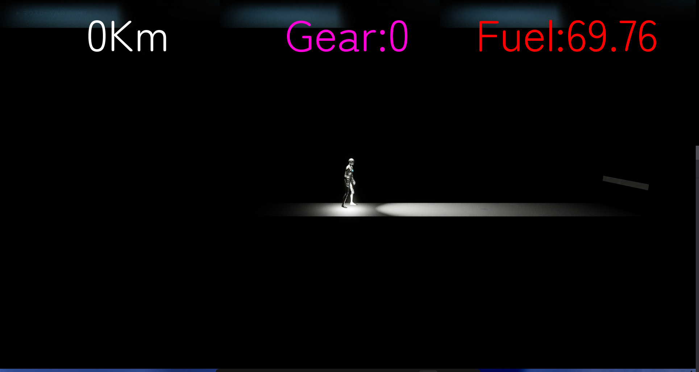

作品概要
本作は「とう」というテーマ案から派生して制作した、暗闇の中を進む横スクロールのランゲームです。 フラッピーバードの下半分のような緊張感をベースにしつつ、ジャンプと横移動で障害を越えながら距離を伸ばしていきます。
ゴール地点は設定せず、どこまで進めたか（到達距離）をスコア化することで、短時間でも何度も挑戦しやすいゲーム体験を目指しました。 ライト演出やスピードギアの要素により、雰囲気と難易度の両方を調整しています。
「とう」をテーマに制作した、暗闇×距離の横スクロールランゲームです。 ゴールはなく、どこまで進めたか（距離）をスコアとして競う構成で、 スピード上昇（ギア）によって難易度が上がる設計になっています。

暗闇の中をライトを頼りに進む、横スクロールランゲーム（画像は仮でもOK）
本作は「とう」というテーマ案から派生して制作した、暗闇の中を進む横スクロールのランゲームです。 フラッピーバードの下半分のような緊張感をベースにしつつ、ジャンプと横移動で障害を越えながら距離を伸ばしていきます。
ゴール地点は設定せず、どこまで進めたか（到達距離）をスコア化することで、短時間でも何度も挑戦しやすいゲーム体験を目指しました。 ライト演出やスピードギアの要素により、雰囲気と難易度の両方を調整しています。
BestX = max(BestX, PlayerX) による最高到達X更新ステージ自動生成で破綻しやすい「チャンク接続位置のズレ」を防ぐために、 1チャンクの幅・タイル幅・タイル中心座標・NextAttach位置を共通規格として固定しました。 これにより、新しいチャンクを追加するときもルールに沿って作成しやすくなりました。
ランゲームではGameOver演出中にスコアが伸びてしまうと不自然になるため、
bGameOver フラグで BestX の更新を止めるガードを入れました。
これにより、リザルト表示とスコア計測の整合性を保っています。
アイテムをチャンクへ直接埋め込まず、Generator側で確率スポーンする構成にすることで、 チャンクの使い回しやバランス調整（出現率・連続制御）がしやすくなるように設計しました。
テーマに沿ったシンプルな開発ができ、ライトの調整やアニメーション実装を通してUE5への理解が深まったと感じています。 一方で、実装機能数という意味ではまだ伸ばせる余地があり、構成を保ちながら要素を増やす設計力が次の課題だと考えています。
プレイ画面・HUD・チャンク構成など（画像は後から差し替え可能）
